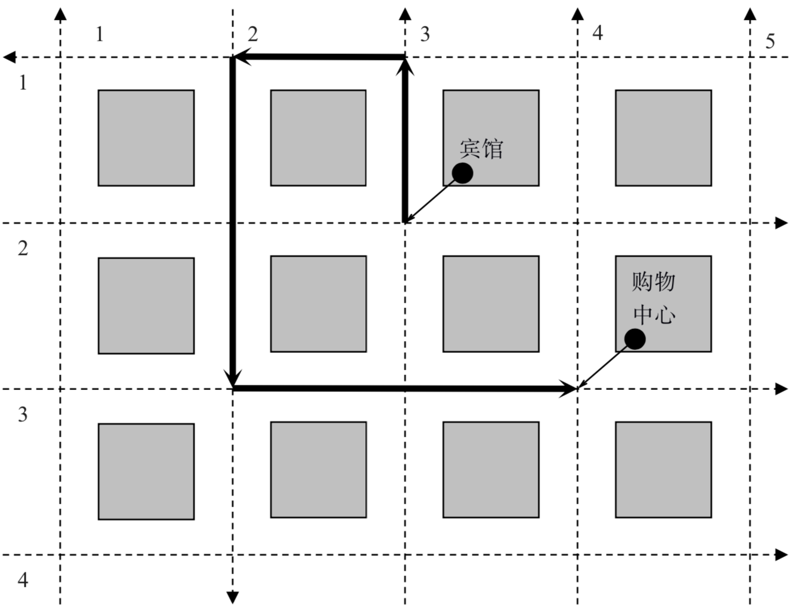

P 城是 M 国的著名旅游城市。在市长 G 先生的治理下，人民安居乐业，城市欣欣向荣。然而，G 市长并没有被自己的政绩冲昏头脑，他清醒地意识到城市的治理还存在着一些问题，其中之一就是交通问题。
P 城有 $m$ 条横向街道和 $n$ 条纵向街道，横向街道横贯东西，纵向街道纵穿南北，构成了 P 城整齐的交通网络（如图所示）。

由于街道狭窄，每条街道都只允许单向行驶，单向行驶的方向是事先设定好了的。一条横向街道的行驶方向只能是向东或者向西，一条纵向街道的行驶方向只能是向南或者向北，逆向行驶是绝对禁止的。
这项限制给交通带来了巨大的不便。如图，很多游人希望从宾馆前往购物中心，但限于街道的行驶方向，他们不得不绕一个大圈才能够到达。
这个问题一直困扰着 G 市长，每天他都会收到不少游人的来信，抱怨 P 城不合理的交通设计。但由于街道数目过多，他和他的部下始终不能解决这个问题……
令人高兴的是这个问题不久就可能得以解决。因为最近他们以重金聘请了著名的交通规划大师 B 先生，请他对 P 城的交通进行有效合理的改造。
B 先生知道不能通过拓宽街道的方法解决问题，因为这样势必影响到街道两旁的旅游景点，这是大家都不希望看到的。于是他准备重新设计街道的行驶方向（整条街道的行驶方向），使之尽可能满足大家的要求。
B 先生先把 P 城的街道编号，横向街道由北向南编号为 $1,2,\cdots,m$，纵向街道由西向东编号为 $1,2,\cdots,n$。这样任何一个十字路口的位置都可以用一对正整数来表示，第一个数是该路口所在的横向街道的编号，第二个数是它所在的纵向街道的编号，这对整数被称为该十字路口的坐标。比如图 $1$ 中宾馆所在的十字路口的坐标是 $(2,3)$。
经过长期调查，他整理出了游人们提得相对集中的一些要求。每条要求都可以写成如下的形式：从一个十字路口到另一个十字路口的最短路径的长度必须等于它们之间的曼哈顿距离。所谓曼哈顿距离是指两个十字路口在东西方向上的距离加上在南北方向上的距离，坐标分别为 $(x_1,y_1)$ 和 $(x_2,y_2)$ 的两个十字路口之间的曼哈顿距离为 $|x_1-x_2|+|y_1-y_2|$。
好了，B 先生已经知道了 P 城目前所有街道的行驶方向和游人们提得相对集中的要求，他能不能重新设计街道的行驶方向，使之满足所有要求呢？
另外，改变每条街道的行驶方向都有一定的工作量，工作量的大小因道路而异。B 先生不仅想找到一个可行的改造计划，而且还希望这个计划的总工作量尽可能小。你能帮帮他吗？
 Comet OJ
Comet OJ